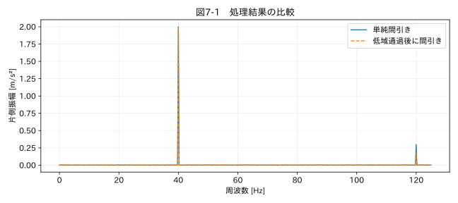

第II部 時間軸を修復する / 第07章
リサンプリングと補間
学習目標
アップサンプリング、ダウンサンプリング、集約を区別する。折り返しを数値例で説明し、帯域を落とすことと測定品質を改善することを混同しない。
7.1 点数を揃える前に目的を決める
1秒ごとの温度と0.001秒ごとの振動を同じ表へ入れたい。単純に両方を1秒周期にすれば扱いやすいが、振動波形はほとんど失われる。目的が熱状態と振動の強さの比較なら、1秒ごとのRMSやピークを作る方が適切かもしれない。目的が波形位相の比較なら、1秒周期への変更自体が不適切である。
アップサンプリングは、観測の間へ新しい時刻を置くことだ。補間値を100倍増やしても、独立な測定情報は増えない。ダウンサンプリングは時刻間隔を広げることで、維持できる周波数帯域が狭くなる。集約は区間内の平均・最大・RMSなどを代表値にすることであり、瞬時値のサンプリングとは意味が異なる。
7.2 線形補間の式
時刻t₀、t₁の観測x₀、x₁に挟まれたtでは、x̂(t)=x₀+(x₁−x₀)(t−t₀)/(t₁−t₀) とする。0秒で20 °C、10秒で30 °Cなら、2秒の補間値は22 °Cだ。これは区間内が直線で変化したという仮定であり、実際に22 °Cを測定したという意味ではない。
行番号を等間隔として線形補間する方法と、実時刻で補間する方法は違う。0、1、10秒の三点で中央が欠損なら、両端が0と10の場合、行番号の補間は5、時刻の補間は1となる。本書の補間関数は実時間を使う。
前方補完は最後の状態が継続したと仮定するため、運転モードや設定値に向く場合がある。温度の急上昇中に前方補完すれば、上昇を遅らせる。スプラインや高次多項式は滑らかでも、観測範囲を越える値や振動を作ることがある。単調性を保存する補間も、未知の急変を再現する保証は持たない。
7.3 エイリアシングを数値で理解する
1000 Hzで取得した130 Hz成分を、4点に1点だけ抜いて250 Hzへ変える。新しいナイキスト周波数は125 Hzなので、130 Hzは120 Hzへ折り返す。370 Hz成分も250 Hzとの差で120 Hzに現れる。もとは異なる二つの成分が同じ周波数へ重なり、後から分離できなくなる。
単純間引き後のスペクトルに120 Hzの山があっても、それを新しい共振と解釈してはいけない。エイリアシングを防ぐには、間引く前に新しいナイキスト周波数を超える帯域を十分に減衰させる必要がある。デジタル処理で防げるのは後段の間引きによる折り返しであり、ADC取得時点で既に折り返した成分は元に戻せない。
7.4 実装と境界
SciPyの resample_poly(x, 1, 4) は、低域通過FIR処理を含むレート変換を行う。R4 本章は等間隔、欠損なしの加速度データに適用する。非等間隔やNaNの入った値をそのまま渡す前提ではない。出力の境界は信号の外側をどう仮定するかに依存するので、全区間の統計だけでなく端部を確認する。
関連する詳細実験は実践補講に掲載。入力形式・同期・補間・校正・多変量・チャンク境界を扱う。
実行するコードと結果
run.py · 共通処理の全ソース
教材フォルダで python examples/chapter07/run.py を実行。以下は省略のないスクリプト。共通モジュールは教材一式に含む。
from pathlib import Path
import sys
ROOT=Path(__file__).resolve().parents[2]
sys.path.insert(0,str(ROOT))
sys.path.insert(0,str(ROOT/'examples'))
import numpy as np
import pandas as pd
from common import load,truth,seconds,plot
from tsclean.core import numeric,timestamps,time_flags,hampel,freeze_candidates,interpolate_short,compare
from scipy.signal import resample_poly
df=load('03_vibration');x=df['測定値'].to_numpy()
y=resample_poly(x,1,4);naive=x[::4]
f=np.fft.rfftfreq(len(y),d=.004)
amp=lambda z:2*np.abs(np.fft.rfft(z))/len(z)
print('入力/出力行数:',len(x),len(y),'出力fs:',250)
print('130 Hz成分は新Nyquist 125 Hzを超えるため保存できない。')
plot(7,f,{'単純間引き':amp(naive),'低域通過後に間引き':amp(y)},'片側振幅 [m/s²]',xlabel='周波数 [Hz]')
検証環境での実行結果を開く
入力/出力行数: 4000 1000 出力fs: 250
130 Hz成分は新Nyquist 125 Hzを超えるため保存できない。

7.5 130 Hzを残したい場合
図7-1の処理後スペクトルで130 Hzに相当する成分が小さくなることは、設計通りの帯域制限である。しかし130 Hzの配管振動を評価する試験なら、重要な情報を失っている。サンプリングレートを250 Hzにしてはいけない。必要な通過帯域、遷移帯域、許容振幅誤差を決めてレートを選ぶ。
「間引き前に平均したから安全」とも限らない。短い移動平均には阻止帯域で十分な減衰が得られない周波数がある。区間平均を使う場合も周波数応答を確認する。目的がゆっくりした平均温度なら、区間内の有効数・欠損率・最大値を併記すると情報の失い方を評価しやすい。
演習
基礎演習
教材を1000 Hzから250 Hzへ変換し、入力と出力の点数を確認する。
応用演習
出力を500 Hzにするにはup、downをどう変えるか。130 Hzと370 Hzの取り扱いはどう変わるか。
実務演習
圧力の最大値を確認するために、10秒ごとの平均値だけを保管する案が出た。代替の保存項目を設計する。
演習解答・解説を表示する
基礎：4000点から1000点になる。処理後の点数が正しいことに加え、単純間引きとの差を確認する。
応用：up=1、down=2。新Nyquistは250 Hzで、130 Hzは通過帯域として設計できる。370 Hzは除去対象になる。実際の減衰量はフィルタ特性と境界条件に依存する。
実務：最大値・最小値・その時刻・有効数・欠損率・飽和フラグを保存し、重要区間では波形も残す。平均だけから最大値は復元できない。データ容量削減の目的と設計判定の要求を明確に分ける。
章末まとめ
レート変更は情報を増やしたり失ったりする操作である。何を保存すべきかを先に決め、帯域、補間仮定、端点処理を確認する。